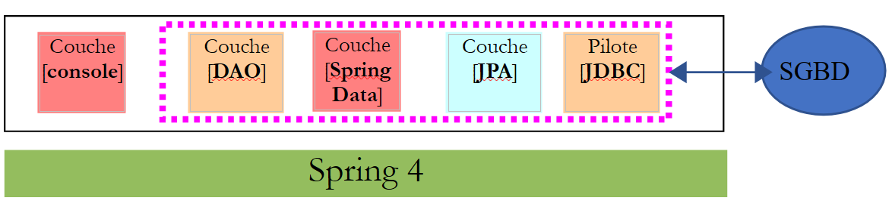
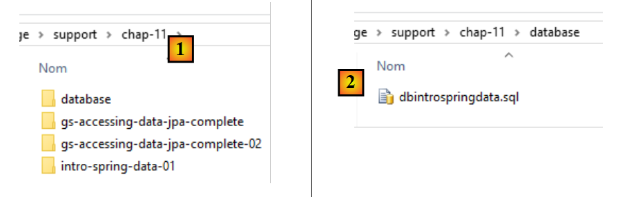
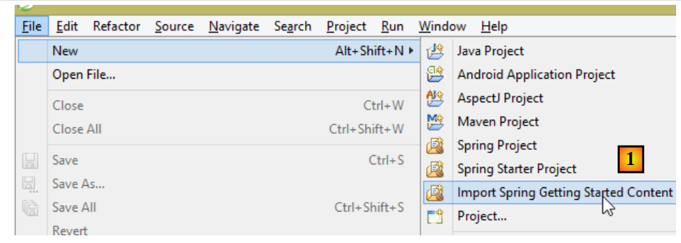
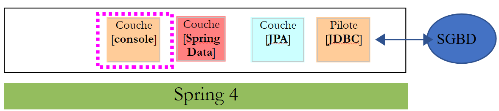
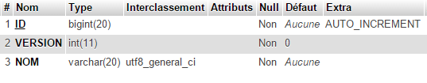
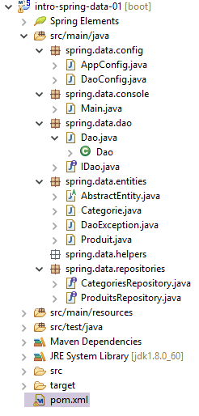
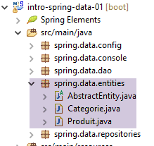
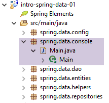
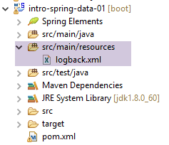

11. [Curso]: Gestión de bases de datos relacionales con Spring Data
Palabras clave: arquitectura multicapa, Spring, inyección de dependencias, JPA (Java Persistence API), Spring Data.
Implementaremos la capa [DAO] del trabajo utilizando [Spring Data], un componente del ecosistema Spring. [Spring Data] se basa en una capa JPA (Java Persistence API) que permite a la capa [DAO] manipular objetos en lugar de sentencias SQL. En última instancia, la capa [DAO] no es consciente de que está interactuando con una base de datos. Solo conoce la interfaz de la capa [Spring Data].
 |
En primer lugar, exploraremos [Spring Data] a través de dos ejemplos.
11.1. Soporte
 |
- En [1], la carpeta [support / chap-11] contiene tres proyectos de Eclipse;
- en [2], el script SQL para crear la base de datos de ejemplo de este capítulo;
11.2. Ejemplo 1
El sitio web de Spring ofrece numerosos tutoriales para iniciarse en Spring [http://spring.io/guides]. Utilizaremos uno de ellos para presentar Spring Data. Para ello, utilizaremos Spring Tool Suite (STS).
 |
- En [1], importamos uno de los tutoriales de [spring.io/guides];
 |
- En [2], seleccionamos el tutorial [Acceso a datos JPA], que muestra cómo acceder a una base de datos utilizando Spring Data;
- En [3], seleccionamos un proyecto configurado por Maven;
- en [4], el tutorial está disponible en dos formatos: [initial], que es una versión vacía que se rellena siguiendo el tutorial, o [complete], que es la versión final del tutorial. Elegimos esta última;
- En [5], puedes elegir ver el tutorial en un navegador;
- En [6], el proyecto final.
11.2.1. La configuración de Maven del proyecto
Las dependencias de Maven del proyecto se configuran en el archivo [pom.xml]:
<groupId>org.springframework</groupId>
<artifactId>gs-accessing-data-jpa</artifactId>
<version>0.1.0</version>
<parent>
<groupId>org.springframework.boot</groupId>
<artifactId>spring-boot-starter-parent</artifactId>
<version>1.1.10.RELEASE</version>
</parent>
<dependencies>
<dependency>
<groupId>org.springframework.boot</groupId>
<artifactId>spring-boot-starter-data-jpa</artifactId>
</dependency>
<dependency>
<groupId>com.h2database</groupId>
<artifactId>h2</artifactId>
</dependency>
</dependencies>
<properties>
<!-- use UTF-8 for everything -->
<project.build.sourceEncoding>UTF-8</project.build.sourceEncoding>
<project.reporting.outputEncoding>UTF-8</project.reporting.outputEncoding>
<start-class>hello.Application</start-class>
</properties>
- líneas 5–9: definen un proyecto Maven principal. Este proyecto define la mayoría de las dependencias del proyecto. Pueden ser suficientes, en cuyo caso no se añaden dependencias adicionales, o pueden no serlo, en cuyo caso se añaden las dependencias que faltan;
- líneas 12–15: definen una dependencia de [spring-boot-starter-data-jpa]. Este artefacto contiene las clases de Spring Data;
- Líneas 16–19: definen una dependencia del SGBD H2, que permite crear y gestionar bases de datos en memoria.
Veamos las clases que proporcionan estas dependencias:
 |  |  |
Hay muchas:
- algunas pertenecen al ecosistema de Spring (las que empiezan por «spring»);
- otras pertenecen al ecosistema Hibernate (hibernate, jboss), cuya implementación de JPA estamos utilizando aquí;
- otras son bibliotecas de pruebas (junit, hamcrest);
- otras son bibliotecas de registro (log4j, logback, slf4j);
Las mantendremos todas. Para una aplicación de producción, solo deben conservarse las necesarias.
En la línea 26 del archivo [pom.xml], encontramos la línea:
<start-class>hello.Application</start-class>
Esta línea está vinculada a las siguientes líneas:
<build>
<plugins>
<plugin>
<artifactId>maven-compiler-plugin</artifactId>
</plugin>
<plugin>
<groupId>org.springframework.boot</groupId>
<artifactId>spring-boot-maven-plugin</artifactId>
</plugin>
</plugins>
</build>
Líneas 6–9: El [spring-boot-maven-plugin] permite generar el archivo JAR ejecutable de la aplicación. La línea 26 del archivo [pom.xml] especifica la clase ejecutable de este JAR.
11.2.2. La capa [JPA]
El acceso a la base de datos se gestiona a través de una capa [JPA], la API de persistencia de Java:
 |
 |
La aplicación es básica y gestiona entidades [Cliente]. La clase [Cliente] forma parte de la capa [JPA] y es la siguiente:
package hello;
import javax.persistence.Entity;
import javax.persistence.GeneratedValue;
import javax.persistence.GenerationType;
import javax.persistence.Id;
@Entity
public class Customer {
@Id
@GeneratedValue(strategy = GenerationType.AUTO)
private long id;
private String firstName;
private String lastName;
protected Customer() {
}
public Customer(String firstName, String lastName) {
this.firstName = firstName;
this.lastName = lastName;
}
@Override
public String toString() {
return String.format("Customer[id=%d, firstName='%s', lastName='%s']", id, firstName, lastName);
}
}
Un cliente tiene un ID [id], un nombre [firstName] y un apellido [lastName]. Cada instancia de [Customer] representa una fila en una tabla de la base de datos.
- línea 8: anotación JPA que garantiza que la persistencia de las instancias de [Customer] (Crear, Leer, Actualizar, Eliminar) será gestionada por una implementación de JPA. Según las dependencias de Maven, podemos ver que se está utilizando la implementación de JPA/Hibernate;
- Líneas 11-12: anotaciones JPA que asocian el campo [id] con la clave principal de la tabla [Customer]. La línea 12 indica que la implementación de JPA utilizará el método de generación de claves principales específico del SGBD que se esté utilizando, en este caso H2;
No hay otras anotaciones JPA. Por lo tanto, se utilizarán los valores por defecto:
- la tabla [Customer] recibirá el nombre de la clase, es decir, [Customer];
- las columnas de esta tabla recibirán el nombre de los campos de la clase: [id, firstName, lastName], teniendo en cuenta que no se distingue entre mayúsculas y minúsculas en los nombres de las columnas de la tabla;
Tenga en cuenta que la implementación de JPA utilizada nunca recibe un nombre.
11.2.3. La capa [Spring Data]
La clase [CustomerRepository] implementa la capa de acceso para la tabla [Customer]. Su código es el siguiente:
 |
 |
package hello;
import java.util.List;
import org.springframework.data.repository.CrudRepository;
public interface CustomerRepository extends CrudRepository<Customer, Long> {
List<Customer> findByLastName(String lastName);
}
Por lo tanto, se trata de una interfaz y no de una clase (línea 7). Extiende la interfaz [CrudRepository], una interfaz de Spring Data (línea 5). Esta interfaz está parametrizada por dos tipos: el primero es el tipo de los elementos gestionados, en este caso el tipo [Customer]; el segundo es el tipo de la clave principal de los elementos gestionados, en este caso un tipo [Long]. La interfaz [CrudRepository] es la siguiente:
package org.springframework.data.repository;
import java.io.Serializable;
@NoRepositoryBean
public interface CrudRepository<T, ID extends Serializable> extends Repository<T, ID> {
<S extends T> S save(S entity);
<S extends T> Iterable<S> save(Iterable<S> entities);
T findOne(ID id);
boolean exists(ID id);
Iterable<T> findAll();
Iterable<T> findAll(Iterable<ID> ids);
long count();
void delete(ID id);
void delete(T entity);
void delete(Iterable<? extends T> entities);
void deleteAll();
}
Esta interfaz define las operaciones CRUD (Crear – Leer – Actualizar – Eliminar) que se pueden realizar en un tipo JPA T:
- línea 8: el método save permite que una entidad T se persista en la base de datos. Persiste la entidad utilizando la clave primaria que le ha asignado el SGBD. También permite actualizar una entidad T identificada por su clave primaria id. La elección entre estas dos acciones depende del valor de la clave primaria id: si es nulo, se realiza la operación de persistencia; en caso contrario, se realiza la operación de actualización;
- línea 10: igual que arriba, pero para una lista de entidades;
- línea 12: el método findOne recupera una entidad T identificada por su clave primaria id;
- línea 22: el método delete permite eliminar una entidad T identificada por su clave primaria id;
- líneas 24-28: variaciones del método [delete];
- línea 16: el método [findAll] recupera todas las entidades T persistidas;
- línea 18: igual que arriba, pero limitado a las entidades para las que se ha proporcionado una lista de identificadores;
Volvamos a la interfaz [CustomerRepository]:
package hello;
import java.util.List;
import org.springframework.data.repository.CrudRepository;
public interface CustomerRepository extends CrudRepository<Customer, Long> {
List<Customer> findByLastName(String lastName);
}
- La línea 9 te permite recuperar un [Cliente] por su [apellido];
Y eso es todo en cuanto a la capa [DAO]. No hay ninguna clase de implementación para la interfaz anterior. La genera [Spring Data] en tiempo de ejecución. Los métodos de la interfaz [CrudRepository] se implementan automáticamente. En cuanto a los métodos añadidos a la interfaz [CustomerRepository], depende. Volvamos a la definición de [Customer]:
private long id;
private String firstName;
private String lastName;
El método de la línea 9 es implementado automáticamente por [Spring Data] porque hace referencia al campo [lastName] (línea 3) de [Customer]. Cuando encuentra un método [findBySomething] en la interfaz que se va a implementar, Spring Data lo implementa utilizando la siguiente consulta JPQL (Java Persistence Query Language):
Por lo tanto, el tipo T debe tener un campo llamado [algo]. Así pues, el método
se implementará con un código similar al siguiente:
return [em].createQuery("select c from Customer c where c.lastName=:value").setParameter("value",lastName).getResultList()
donde [em] hace referencia al contexto de persistencia de JPA. Esto solo es posible si la clase [Customer] tiene un campo llamado [lastName], lo cual es el caso.
En conclusión, en casos sencillos, Spring Data nos permite implementar la capa [DAO] con una interfaz simple.
11.2.4. La capa [console]
 |
 |
La clase [Application] es la siguiente:
package hello;
import org.springframework.beans.factory.annotation.Autowired;
import org.springframework.boot.CommandLineRunner;
import org.springframework.boot.SpringApplication;
import org.springframework.boot.autoconfigure.SpringBootApplication;
@SpringBootApplication
public class Application implements CommandLineRunner {
@Autowired
CustomerRepository repository;
public static void main(String[] args) {
SpringApplication.run(Application.class);
}
@Override
public void run(String... strings) throws Exception {
// save a couple of customers
repository.save(new Customer("Jack", "Bauer"));
repository.save(new Customer("Chloe", "O'Brian"));
repository.save(new Customer("Kim", "Bauer"));
repository.save(new Customer("David", "Palmer"));
repository.save(new Customer("Michelle", "Dessler"));
// fetch all customers
System.out.println("Customers found with findAll():");
System.out.println("-------------------------------");
for (Customer customer : repository.findAll()) {
System.out.println(customer);
}
System.out.println();
// fetch an individual customer by ID
Customer customer = repository.findOne(1L);
System.out.println("Customer found with findOne(1L):");
System.out.println("--------------------------------");
System.out.println(customer);
System.out.println();
// fetch customers by last name
System.out.println("Customer found with findByLastName('Bauer'):");
System.out.println("--------------------------------------------");
for (Customer bauer : repository.findByLastName("Bauer")) {
System.out.println(bauer);
}
}
}
- línea 9: la clase implementa la interfaz [CommandLineRunner], que es una interfaz de [Spring Boot] (línea 4). Esta interfaz solo tiene un método, el de la línea 19;
- línea 8: @SpringBootApplication es una anotación que agrupa varias anotaciones de [Spring Boot]:
- @Configuration: indica que la clase es una clase de configuración;
- @EnableAutoConfiguration: indica a [Spring Boot] que cree automáticamente una serie de beans basándose en diversas propiedades, en particular el contenido de la ruta de clases del proyecto. Dado que las bibliotecas de Hibernate se encuentran en la ruta de clases, el bean [entityManagerFactory] se implementará utilizando Hibernate. Dado que la biblioteca del SGBD H2 se encuentra en la ruta de clases, el bean [dataSource] se implementará utilizando H2. En el bean [dataSource], también debemos definir el nombre de usuario y la contraseña. Aquí, Spring Boot utilizará el administrador predeterminado de H2, que no tiene contraseña. Dado que la biblioteca [spring-tx] se encuentra en la ruta de clases, se utilizará el gestor de transacciones de Spring;
- @EnableWebMvc: si la biblioteca [spring-mvc] se encuentra en la ruta de clases. En este caso, se realiza la configuración automática de la aplicación web;
- @ComponentScan: indica a Spring dónde buscar otros beans, configuraciones y servicios. Aquí, se buscan por defecto en el paquete que contiene la clase anotada, es decir, el paquete [hello]. De este modo, se encontrarán las clases [Customer] y [CustomerRepository]. Como la primera tiene la anotación [@Entity], se catalogará como una entidad que gestionará Hibernate. Como la segunda extiende la interfaz [CrudRepository], se registrará como un bean de Spring;
- líneas 11-12: el bean [CustomerRepository] se inyecta en el código de la clase principal;
- línea 15: se ejecuta el método estático [run] de la clase [SpringApplication] del proyecto Spring Boot. Su parámetro es la clase que tiene una anotación [Configuration] o [EnableAutoConfiguration]. A continuación, tendrá lugar todo lo explicado anteriormente. El resultado es un contexto de aplicación Spring, es decir, un conjunto de beans gestionados por Spring;
Las siguientes operaciones simplemente utilizan los métodos del bean que implementa la interfaz [CustomerRepository]. La salida de la consola es la siguiente:
- Líneas 1-8: el logotipo del proyecto Spring Boot;
- línea 9: se ejecuta la clase [hello.Application];
- línea 10: [AnnotationConfigApplicationContext] es una clase que implementa la interfaz [ApplicationContext] de Spring. Es un contenedor de beans;
- línea 11: el bean [entityManagerFactory] se implementa utilizando la clase [LocalContainerEntityManagerFactory], una clase de Spring;
- línea 12: aparece [Hibernate]. Esta es la implementación de JPA que se ha elegido;
- línea 19: un dialecto de Hibernate es la variante de SQL que se utilizará con el SGBD. Aquí, el dialecto [H2Dialect] indica que Hibernate funcionará con el SGBD H2;
- líneas 21-22: se crea la base de datos. Se crea la tabla [CUSTOMER]. Esto significa que Hibernate se ha configurado para generar tablas a partir de definiciones JPA, en este caso la definición JPA de la clase [Customer];
- líneas 26-30: resultado del método [findAll] de la interfaz;
- línea 34: resultado del método [findOne] de la interfaz;
- líneas 38-39: resultados del método [findByLastName];
- líneas 41 y siguientes: registros del cierre del contexto de Spring.
11.2.5. Configuración manual del proyecto Spring Data
Duplicamos el proyecto anterior en el proyecto [gs-accessing-data-jpa-02]:
 |
En este nuevo proyecto, no utilizaremos la configuración automática que ofrece Spring Boot. Lo configuraremos manualmente. Esto puede resultar útil si las configuraciones predeterminadas no se ajustan a nuestras necesidades.
En primer lugar, especificaremos las dependencias necesarias en el archivo [pom.xml]:
<?xml version="1.0" encoding="UTF-8"?>
<project xmlns="http://maven.apache.org/POM/4.0.0" xsi:schemaLocation="http://maven.apache.org/POM/4.0.0 http://maven.apache.org/maven-v4_0_0.xsd"
xmlns:xsi="http://www.w3.org/2001/XMLSchema-instance">
<modelVersion>4.0.0</modelVersion>
<groupId>org.springframework</groupId>
<artifactId>gs-accessing-data-jpa-02</artifactId>
<version>0.1.0</version>
<parent>
<groupId>org.springframework.boot</groupId>
<artifactId>spring-boot-starter-parent</artifactId>
<version>1.2.7.RELEASE</version>
</parent>
<dependencies>
<!-- Spring Data -->
<dependency>
<groupId>org.springframework.data</groupId>
<artifactId>spring-data-jpa</artifactId>
</dependency>
<!-- Hibernate -->
<dependency>
<groupId>org.hibernate</groupId>
<artifactId>hibernate-entitymanager</artifactId>
</dependency>
<!-- H2 Database -->
<dependency>
<groupId>com.h2database</groupId>
<artifactId>h2</artifactId>
</dependency>
<!-- Tomcat JDBC -->
<dependency>
<groupId>org.apache.tomcat</groupId>
<artifactId>tomcat-jdbc</artifactId>
</dependency>
</dependencies>
<properties>
<!-- use UTF-8 for everything -->
<project.build.sourceEncoding>UTF-8</project.build.sourceEncoding>
<project.reporting.outputEncoding>UTF-8</project.reporting.outputEncoding>
</properties>
<build>
<plugins>
<plugin>
<groupId>org.springframework.boot</groupId>
<artifactId>spring-boot-maven-plugin</artifactId>
</plugin>
</plugins>
</build>
<repositories>
<repository>
<id>spring-releases</id>
<name>Spring Releases</name>
<url>https://repo.spring.io/libs-release</url>
</repository>
<repository>
<id>org.jboss.repository.releases</id>
<name>JBoss Maven Release Repository</name>
<url>https://repository.jboss.org/nexus/content/repositories/releases</url>
</repository>
</repositories>
<pluginRepositories>
<pluginRepository>
<id>spring-releases</id>
<name>Spring Releases</name>
<url>https://repo.spring.io/libs-release</url>
</pluginRepository>
</pluginRepositories>
</project>
- líneas 10–14: el proyecto Maven principal cuyas bibliotecas vamos a utilizar;
- líneas 18–21: Spring Data, utilizado para acceder a la base de datos;
- líneas 23–26: la implementación de Hibernate de la especificación JPA;
- líneas 28–31: el SGBD H2;
- líneas 33–36: las bases de datos suelen utilizarse con grupos de conexiones, lo que evita tener que abrir y cerrar conexiones repetidamente. En este caso, la implementación utilizada es [tomcat-jdbc];
En el nuevo proyecto, la entidad [Customer] y la interfaz [CustomerRepository] permanecen sin cambios. Modificaremos la clase [Application], que se dividirá en dos clases:
- [Config], que será la clase de configuración;
- [Main], que será la clase ejecutable;
 |
La clase ejecutable [Application] queda ahora así:
package console;
import org.springframework.context.annotation.AnnotationConfigApplicationContext;
import repositories.CustomerRepository;
import config.AppConfig;
import entities.Customer;
public class Application {
public static void main(String[] args) {
// instantiation Spring context
AnnotationConfigApplicationContext context = new AnnotationConfigApplicationContext(AppConfig.class);
CustomerRepository repository = context.getBean(CustomerRepository.class);
// save a couple of customers
repository.save(new Customer("Jack", "Bauer"));
repository.save(new Customer("Chloe", "O'Brian"));
repository.save(new Customer("Kim", "Bauer"));
repository.save(new Customer("David", "Palmer"));
repository.save(new Customer("Michelle", "Dessler"));
...
// closing context
context.close();
}
}
- línea 9: la clase [Application] ya no tiene ninguna anotación de configuración;
- líneas 3–7: Obsérvese que ya no hay importaciones del paquete [Spring Boot];
- línea 12: Instanciamos los beans de Spring. Obtenemos el contexto de Spring, que contiene referencias a los beans creados;
- línea 13: solicitamos una referencia al bean [CustomerRepository];
La clase [ Config] que configura el proyecto es la siguiente:
package config;
import javax.persistence.EntityManagerFactory;
import org.apache.tomcat.jdbc.pool.DataSource;
import org.springframework.context.annotation.Bean;
import org.springframework.context.annotation.Configuration;
import org.springframework.data.jpa.repository.config.EnableJpaRepositories;
import org.springframework.orm.jpa.JpaTransactionManager;
import org.springframework.orm.jpa.JpaVendorAdapter;
import org.springframework.orm.jpa.LocalContainerEntityManagerFactoryBean;
import org.springframework.orm.jpa.vendor.Database;
import org.springframework.orm.jpa.vendor.HibernateJpaVendorAdapter;
import org.springframework.transaction.PlatformTransactionManager;
import org.springframework.transaction.annotation.EnableTransactionManagement;
//@EnableTransactionManagement
@EnableJpaRepositories(basePackages = { "repositories" })
@Configuration
// @ComponentScan(basePackages={"package1","package2"})
public class AppConfig {
// h2 database
@Bean
public DataSource dataSource() {
// data source TomcatJdbc
DataSource dataSource = new DataSource();
// configuration access JDBC
dataSource.setDriverClassName("org.h2.Driver");
dataSource.setUrl("jdbc:h2:./demo");
dataSource.setUsername("sa");
dataSource.setPassword("");
// an initially open connection
dataSource.setInitialSize(1);
// result
return dataSource;
}
// the provider JPA
@Bean
public JpaVendorAdapter jpaVendorAdapter() {
HibernateJpaVendorAdapter hibernateJpaVendorAdapter = new HibernateJpaVendorAdapter();
hibernateJpaVendorAdapter.setShowSql(false);
hibernateJpaVendorAdapter.setGenerateDdl(true);
hibernateJpaVendorAdapter.setDatabase(Database.H2);
return hibernateJpaVendorAdapter;
}
// EntityManagerFactory
@Bean
public EntityManagerFactory entityManagerFactory(JpaVendorAdapter jpaVendorAdapter, DataSource dataSource) {
LocalContainerEntityManagerFactoryBean factory = new LocalContainerEntityManagerFactoryBean();
factory.setJpaVendorAdapter(jpaVendorAdapter);
factory.setPackagesToScan("entities");
factory.setDataSource(dataSource);
factory.afterPropertiesSet();
return factory.getObject();
}
// Transaction manager
@Bean
public PlatformTransactionManager transactionManager(EntityManagerFactory entityManagerFactory) {
JpaTransactionManager txManager = new JpaTransactionManager();
txManager.setEntityManagerFactory(entityManagerFactory);
return txManager;
}
}
- línea 17: la anotación [@EnableTransactionManagement] indica que los métodos de las interfaces [CrudRepository] deben ejecutarse dentro de una transacción. Se ha comentado porque este es el comportamiento predeterminado;
- línea 18: la anotación [@EnableJpaRepositories] especifica los directorios donde se encuentran las interfaces [CrudRepository] de Spring Data. Estas interfaces se convertirán en componentes de Spring y estarán disponibles en el contexto de Spring;
- línea 19: la anotación [@Configuration] convierte a la clase [Config] en una clase de configuración de Spring;
- línea 20: la anotación [@ComponentScan] enumera los directorios en los que se deben buscar los componentes de Spring. Los componentes de Spring son clases anotadas con anotaciones de Spring como @Service, @Component, @Controller, etc. Aquí no hay otros aparte de los definidos dentro de la clase [AppConfig], por lo que la anotación se ha comentado;
- líneas 24–37: definen la fuente de datos, la base de datos H2. Es la anotación @Bean de la línea 25 la que convierte al objeto creado por este método en un componente gestionado por Spring. El nombre del método aquí puede ser cualquiera. Sin embargo, debe llamarse [dataSource] si el EntityManagerFactory de la línea 51 está ausente y se define mediante la configuración automática;
- línea 30: la base de datos se llamará [demo] y se generará en la carpeta del proyecto;
- Líneas 40-47: definen la implementación de JPA utilizada, en este caso una implementación de Hibernate. El nombre del método puede ser cualquiera aquí;
- línea 43: sin registros SQL;
- línea 44: la base de datos se creará si no existe;
- líneas 50-58: definen el EntityManagerFactory que gestionará la persistencia JPA. El método debe llamarse [entityManagerFactory];
- línea 51: el método recibe dos parámetros de los tipos de los dos beans definidos anteriormente. Estos serán construidos e inyectados por Spring como parámetros del método;
- línea 53: establece la implementación de JPA que se va a utilizar;
- línea 54: especifica los directorios donde se pueden encontrar las entidades JPA;
- línea 55: establece la fuente de datos que se va a gestionar;
- líneas 61–66: el gestor de transacciones. El método debe llamarse [transactionManager]. Recibe el bean de las líneas 51–58 como parámetro;
- línea 64: el gestor de transacciones se asocia con EntityManagerFactory;
Los métodos anteriores se pueden definir en cualquier orden.
Al ejecutar el proyecto se obtienen los mismos resultados. Aparece un nuevo archivo en la carpeta del proyecto, el archivo de la base de datos H2:
 |
11.2.6. Creación de un archivo ejecutable
Para crear un archivo ejecutable del proyecto, proceda de la siguiente manera:
 |
- en [1]: cree una configuración de tiempo de ejecución;
- en [2]: de tipo [Aplicación Java]
- en [3]: especifica el proyecto que se va a ejecutar (utiliza el botón Examinar);
- en [4]: especifica la clase que se va a ejecutar;
- en [5]: el nombre de la configuración de ejecución; puede ser cualquiera;
 |
- en [6]: exportar el proyecto;
- en [7]: como archivo JAR ejecutable;
- en [8]: especifica la ruta y el nombre del archivo ejecutable que se va a crear;
- en [9]: el nombre de la configuración de tiempo de ejecución creada en [5];
 |
- en [10], el archivo creado;
Una vez hecho esto, abre una consola en la carpeta que contiene el archivo ejecutable:
El archivo se ejecuta de la siguiente manera:
.....\dist>java -jar gs-accessing-data-jpa-02.jar
Los resultados que se muestran en la consola son los siguientes:
11.3. Ejemplo 2
11.3.1. Introducción
Volveremos al ejemplo de la tabla de productos que utilizamos para presentar la API JDBC y crearemos la siguiente arquitectura:
 |
La base de datos [dbintrospringjpa] tiene dos tablas: [PRODUCTS] y [CATEGORIES]. La tabla [CATEGORIES] es la siguiente:
 |
- [ID]: clave principal en modo AUTO_INCREMENT;
- [VERSION]: número de versión del registro;
- [NAME]: nombre de la categoría - único;
La tabla [PRODUCTS] es la siguiente:
 |
- [ID]: clave principal en modo AUTO_INCREMENT;
- [VERSION]: número de versión del registro;
- [NAME]: nombre del producto - único;
- [CATEGORY_ID]: ID de categoría — clave externa en el campo [CATEGORIES.ID];
- [PRICE]: su precio;
- [DESCRIPTION]: una descripción del producto;
Tarea: Crea la base de datos [dbintrospringdata] utilizando el script SQL [dbintrospringdata.sql] de los materiales de apoyo:
11.3.2. Creación del proyecto Maven
Para crear una plantilla de proyecto Spring Data, sigue estos pasos:
 |
- En [1], cree un nuevo proyecto;
- En [2], seleccione el tipo [Spring Starter Project];
- El proyecto generado será un proyecto Maven. En [3], especifique el nombre del grupo del proyecto;
- En [4], especifique el nombre del artefacto (un archivo JAR en este caso) que se creará al compilar el proyecto;
- en [5]: el nombre del proyecto de Eclipse; puede ser cualquiera (no tiene por qué ser el mismo que en [4]);
- en [7]: especifique que está creando un proyecto con una capa [JPA] utilizando el SGBD MySQL. Las dependencias necesarias para dicho proyecto se incluirán entonces en el archivo [pom.xml];
 |
- en [8], introduce el nombre de la carpeta del proyecto;
- en [9], finaliza el asistente;
 |
- en [10]: el proyecto creado;
El archivo [pom.xml] incluye las dependencias necesarias para un proyecto JPA:
<?xml version="1.0" encoding="UTF-8"?>
<project xmlns="http://maven.apache.org/POM/4.0.0" xmlns:xsi="http://www.w3.org/2001/XMLSchema-instance"
xsi:schemaLocation="http://maven.apache.org/POM/4.0.0 http://maven.apache.org/xsd/maven-4.0.0.xsd">
<modelVersion>4.0.0</modelVersion>
<groupId>istia.st.springdata</groupId>
<artifactId>intro-spring-data-01</artifactId>
<version>0.0.1-SNAPSHOT</version>
<packaging>jar</packaging>
<name>intro-spring-data-01</name>
<description>démo spring data avec table de produits</description>
<parent>
<groupId>org.springframework.boot</groupId>
<artifactId>spring-boot-starter-parent</artifactId>
<version>1.2.2.RELEASE</version>
<relativePath/> <!-- lookup parent from repository -->
</parent>
<properties>
<project.build.sourceEncoding>UTF-8</project.build.sourceEncoding>
<start-class>demo.IntroSpringData01Application</start-class>
<java.version>1.7</java.version>
</properties>
<dependencies>
<dependency>
<groupId>org.springframework.boot</groupId>
<artifactId>spring-boot-starter-data-jpa</artifactId>
</dependency>
<dependency>
<groupId>mysql</groupId>
<artifactId>mysql-connector-java</artifactId>
<scope>runtime</scope>
</dependency>
<dependency>
<groupId>org.springframework.boot</groupId>
<artifactId>spring-boot-starter-test</artifactId>
<scope>test</scope>
</dependency>
</dependencies>
<build>
<plugins>
<plugin>
<groupId>org.springframework.boot</groupId>
<artifactId>spring-boot-maven-plugin</artifactId>
</plugin>
</plugins>
</build>
</project>
- líneas 14–19: el proyecto Maven principal —define un gran número de bibliotecas con sus versiones— utilizamos estas bibliotecas como dependencias de Maven sin especificar sus versiones;
- líneas 28-31: la dependencia necesaria para JPA —incluirá [Spring Data];
- líneas 32–36: la dependencia del controlador JDBC de MySQL;
- líneas 37–41: las dependencias necesarias para las pruebas JUnit integradas con Spring;
La clase ejecutable [Application] no hace nada, pero está preconfigurada:
package demo;
import org.springframework.boot.SpringApplication;
import org.springframework.boot.autoconfigure.SpringBootApplication;
@SpringBootApplication
public class IntroSpringData01Application {
public static void main(String[] args) {
SpringApplication.run(IntroSpringData01Application.class, args);
}
}
- La anotación [@SpringBootApplication] convierte a la clase en una clase de configuración automática del proyecto;
La clase de prueba [ApplicationTests] no hace nada, pero está preconfigurada:
package demo;
import org.junit.Test;
import org.junit.runner.RunWith;
import org.springframework.boot.test.SpringApplicationConfiguration;
import org.springframework.test.context.junit4.SpringJUnit4ClassRunner;
@RunWith(SpringJUnit4ClassRunner.class)
@SpringApplicationConfiguration(classes = IntroSpringData01Application.class)
public class IntroSpringData01ApplicationTests {
@Test
public void contextLoads() {
}
}
- Línea 9: La anotación [@SpringApplicationConfiguration] permite utilizar el archivo de configuración [Application]. De este modo, la clase de prueba se beneficiará de todos los beans definidos en este archivo;
- línea 8: la anotación [@RunWith] permite la integración de Spring con JUnit: la clase se puede ejecutar como una prueba JUnit. [@RunWith] es una anotación de JUnit (línea 4), mientras que la clase [SpringJUnit4ClassRunner] es una clase de Spring (línea 6);
Ahora que tenemos un esqueleto de aplicación JPA, podemos completarlo para escribir el proyecto de la capa de persistencia asociado a la base de datos del producto.
11.3.3. El proyecto Eclipse
Ampliaremos el proyecto anterior de la siguiente manera:
 |
- [AppConfig.java]: la clase de configuración del proyecto Spring;
- [Main.java]: la clase ejecutable del proyecto;
- [IDao.java]: la interfaz de la capa [DAO];
- [Dao.java]: la clase de implementación de la capa [DAO];
- [AbstractEntity.java]: la clase padre de las clases [Product] y [Category];
- [Product.java]: clase asociada a una fila de la tabla [PRODUCTS] de la base de datos;
- [Category.java]: clase asociada a una fila de la tabla [CATEGORIES] de la base de datos;
- [ProductsRepository]: la interfaz de Spring Data para acceder a la tabla [PRODUCTS];
- [CategoriesRepository]: la interfaz de Spring Data para acceder a la tabla [CATEGORIES];
- [pom.xml]: el archivo de configuración del proyecto Maven;
Este proyecto implementa la siguiente arquitectura:
 |
La capa [DAO] solo ve la capa implementada por [Spring Data].
11.3.4. Configuración de Maven
El archivo [pom.xml] del proyecto Maven es el siguiente:
<?xml version="1.0" encoding="UTF-8"?>
<project xmlns="http://maven.apache.org/POM/4.0.0" xmlns:xsi="http://www.w3.org/2001/XMLSchema-instance"
xsi:schemaLocation="http://maven.apache.org/POM/4.0.0 http://maven.apache.org/xsd/maven-4.0.0.xsd">
<modelVersion>4.0.0</modelVersion>
<groupId>istia.st.springdata</groupId>
<artifactId>intro-spring-data-01</artifactId>
<version>0.0.1-SNAPSHOT</version>
<packaging>jar</packaging>
<name>intro-spring-data-01</name>
<description>démo spring data avec table de produits</description>
<parent>
<groupId>org.springframework.boot</groupId>
<artifactId>spring-boot-starter-parent</artifactId>
<version>1.2.7.RELEASE</version>
</parent>
<dependencies>
<!-- Spring Data -->
<dependency>
<groupId>org.springframework.data</groupId>
<artifactId>spring-data-jpa</artifactId>
</dependency>
<!-- Hibernate -->
<dependency>
<groupId>org.hibernate</groupId>
<artifactId>hibernate-entitymanager</artifactId>
</dependency>
<!-- MySQL Database -->
<dependency>
<groupId>mysql</groupId>
<artifactId>mysql-connector-java</artifactId>
</dependency>
<!-- Tomcat JDBC -->
<dependency>
<groupId>org.apache.tomcat</groupId>
<artifactId>tomcat-jdbc</artifactId>
</dependency>
<!-- library jSON -->
<dependency>
<groupId>com.fasterxml.jackson.core</groupId>
<artifactId>jackson-core</artifactId>
</dependency>
<dependency>
<groupId>com.fasterxml.jackson.core</groupId>
<artifactId>jackson-databind</artifactId>
</dependency>
<!-- Google Guava -->
<dependency>
<groupId>com.google.guava</groupId>
<artifactId>guava</artifactId>
<version>16.0.1</version>
</dependency>
<!-- Spring Boot Test -->
<dependency>
<groupId>org.springframework.boot</groupId>
<artifactId>spring-boot-starter-test</artifactId>
<scope>test</scope>
</dependency>
<!-- Spring Boot -->
<dependency>
<groupId>org.springframework.boot</groupId>
<artifactId>spring-boot</artifactId>
<scope>test</scope>
</dependency>
<!-- log library -->
<dependency>
<groupId>org.springframework.boot</groupId>
<artifactId>spring-boot-starter-logging</artifactId>
</dependency>
</dependencies>
<properties>
<project.build.sourceEncoding>UTF-8</project.build.sourceEncoding>
<java.version>1.8</java.version>
</properties>
<build>
<plugins>
<plugin>
<groupId>org.apache.maven.plugins</groupId>
<artifactId>maven-surefire-plugin</artifactId>
<version>2.18.1</version>
</plugin>
</plugins>
</build>
</project>
Esta configuración es la que se utiliza y se explica en la sección 11.2.5. Añadimos las siguientes bibliotecas:
- líneas 42-49: una biblioteca JSON utilizada por el método [toString] de la clase [Product];
- líneas 51–55: la biblioteca [Google Guava], que proporciona métodos de utilidad para gestionar colecciones de elementos. La utilizará la clase [Dao], que implementa la capa [DAO];
- líneas 56-67: las bibliotecas necesarias para las pruebas JUnit;
- líneas 69–72: una biblioteca de registro;
- líneas 81–86: los complementos de Maven necesarios para el proyecto;
11.3.5. Entidades de la capa [JPA]
Capa [DAO] Capa [Console] Capa [JPA] Controlador [JDBC] Capa [Spring Data] Spring 4 DBMS
 |
11.3.5.1. La clase [AbstractEntity]
La clase [AbstractEntity] es la siguiente:
package spring.data.entities;
import javax.persistence.Column;
import javax.persistence.GeneratedValue;
import javax.persistence.GenerationType;
import javax.persistence.Id;
import javax.persistence.MappedSuperclass;
import javax.persistence.Version;
import com.fasterxml.jackson.core.JsonProcessingException;
import com.fasterxml.jackson.databind.ObjectMapper;
@MappedSuperclass
public abstract class AbstractEntity {
// properties
@Id
@GeneratedValue(strategy = GenerationType.IDENTITY)
@Column(name = "ID")
protected Long id;
@Version
@Column(name = "VERSION")
protected Long version;
// manufacturers
public AbstractEntity() {
}
public AbstractEntity(Long id, Long version) {
this.id = id;
this.version = version;
}
// redefine [equals] and [hashcode]
@Override
public int hashCode() {
return (id != null ? id.hashCode() : 0);
}
@Override
public boolean equals(Object entity) {
if (!(entity instanceof AbstractEntity)) {
return false;
}
String class1 = this.getClass().getName();
String class2 = entity.getClass().getName();
if (!class2.equals(class1)) {
return false;
}
AbstractEntity other = (AbstractEntity) entity;
return id != null && this.id.longValue() == other.id.longValue();
}
// signature jSON
public String toString() {
ObjectMapper mapper = new ObjectMapper();
try {
return mapper.writeValueAsString(this);
} catch (JsonProcessingException e) {
e.printStackTrace();
return null;
}
}
// getters and setters
....
}
El objetivo de esta clase es proporcionar una clase padre para las entidades JPA encapsulando en una única ubicación las propiedades [id, version] (líneas 19, 22) comunes a las entidades [Product] y [Category] vinculadas a la base de datos. Estas propiedades están vinculadas a las columnas [ID, VERSION] de las tablas (líneas 18, 21).
- línea 13: la anotación [@MappedSuperclass] indica que la clase es una clase padre de entidades JPA;
- línea 16: la anotación [@Id] indica que el campo [id] (podría tener un nombre diferente) está asociado a la clave principal de una tabla;
- línea 17: la anotación [@GeneratedValue(strategy=GenerationType.IDENTITY)] establece el modo de generación de la clave primaria. El modo [GenerationType.IDENTITY] utilizará el modo [AUTO_INCREMENT] con MySQL. Con otro SGBD, este modo utilizaría un método diferente. La ventaja es que el desarrollador no tiene que preocuparse por esto, y su código sigue siendo válido independientemente del SGBD utilizado;
- línea 18: la anotación [@Column] especifica la columna asociada al campo. Cuando esta anotación no está presente, JPA asume que la columna tiene el mismo nombre que el campo. Este es el caso aquí. Por lo tanto, podríamos haber omitido esta anotación;
- línea 20: la anotación [@Version] indica que el campo [version] está asociado a una columna de versionado. La implementación de JPA incrementará este número de versión cada vez que se modifique la entidad. Este número se utiliza para evitar actualizaciones simultáneas de la entidad por parte de dos usuarios diferentes: dos usuarios, U1 y U2, leen la entidad E con un número de versión igual a V1. U1 modifica E y persiste este cambio en la base de datos: el número de versión cambia entonces a V1+1. U2 modifica E a su vez y persiste este cambio en la base de datos: recibirá una excepción porque su versión (V1) difiere de la de la base de datos (V1+1);
- líneas 35–52: redefinición de los métodos [hashCode] y [equals]. Por defecto, [obj1.equals(obj2)] devuelve true si [obj1 == obj2], es decir, si obj1 y obj2 son dos punteros iguales. Si queremos comparar los objetos a los que apuntan los punteros en lugar de los propios punteros, debemos sobrescribir los métodos [equals] y [hashCode]. Este último debe devolver el mismo valor para dos objetos que el método [equals] considere iguales;
- líneas 42–51: dos objetos de tipo [AbstractEntity] o tipos derivados se considerarán iguales si sus claves primarias [id] son iguales;
- líneas 35–38: El método [hashCode] devuelve efectivamente el mismo valor para dos objetos [AbstractEntity] idénticos que, por lo tanto, tienen la misma clave primaria [id];
- líneas 55-63: el método [toString] devuelve la cadena JSON del objeto [this]. Si este objeto hace referencia a una clase hija, este método devolverá la cadena JSON de la clase hija. Esto elimina la necesidad de crear un método [toString] en las clases hijas;
11.3.5.2. La entidad JPA [Product]
La clase [Product] es una entidad JPA asociada a una fila de la tabla [PRODUCTS]:
|
package spring.data.entities;
import javax.persistence.Column;
import javax.persistence.Entity;
import javax.persistence.FetchType;
import javax.persistence.JoinColumn;
import javax.persistence.ManyToOne;
import javax.persistence.Table;
import com.fasterxml.jackson.annotation.JsonFilter;
@Entity
@Table(name = "PRODUITS")
@JsonFilter("jsonFilterProduit")
public class Produit extends AbstractEntity {
// properties
@Column(name = "NOM")
private String nom;
@Column(name = "CATEGORIE_ID", insertable = false, updatable = false)
private Long idCategorie;
@Column(name = "PRIX")
private double prix;
@Column(name = "DESCRIPTION")
private String description;
// the category
@ManyToOne(fetch = FetchType.LAZY)
@JoinColumn(name = "CATEGORIE_ID")
private Categorie categorie;
// manufacturers
public Produit() {
}
public Produit(String nom, double prix, String description) {
this.nom = nom;
this.prix = prix;
this.description = description;
}
// getters and setters
...
}
- línea 12: la anotación [@Entity] convierte a la clase [Product] en una entidad gestionada por la capa [JPA];
- Línea 13: La anotación [@Table(name = "PRODUCTS")] indica que la clase [Product] representa una fila de la tabla [PRODUCTS] en la base de datos;
- Línea 14: el nombre del filtro JSON que se aplicará a la entidad. Veremos que la propiedad [categorie] de la línea 13 no siempre está disponible. Por lo tanto, debe excluirse de la representación JSON del objeto. Para ello, necesitamos un filtro. Así pues, especificaremos si queremos o no la propiedad [categorie] en un filtro denominado [jsonFilterCategorie];
- línea 18: la anotación [@Column] asocia el campo [nom] con la columna [NOM] de la tabla [PRODUITS]. Cuando el campo tiene el mismo nombre que la columna asociada, se puede omitir la anotación [@Column]. Ese sería el caso aquí;
- líneas 31-33: la categoría del producto;
- línea 31: la anotación [@ManyToOne] indica que la columna a la que hace referencia la anotación de la línea 32 [@JoinColumn(name = "CATEGORIE_ID")] es una clave externa de la tabla [PRODUCTS] de la entidad [Product] a la tabla [CATEGORIES] asociada a la entidad de la línea 33. Esta anotación debe aplicarse a una entidad JPA. Por lo tanto, la clase de la línea 33 debe ser una entidad JPA;
- Línea 31: La anotación [fetch = FetchType.LAZY] especifica que, cuando se recupera un producto de la tabla [PRODUCTS], su categoría (línea 33) no se recupera inmediatamente (carga diferida). Se obtiene entonces durante la primera llamada al método [getCategory]. Este atributo no es obligatorio. La implementación de JPA utilizada puede ignorarla. Es precisamente porque la propiedad [category] puede estar presente o no por lo que hemos introducido el filtro JSON en la línea 14. Las implementaciones de JPA existentes (Hibernate, Eclipselink, OpenJPA) no gestionan esta anotación de la misma manera. Hibernate mejora el método [getCategory] inicial (que simplemente devuelve el campo category) realizando una llamada al SGBD para recuperar la categoría. Para que esto funcione, la conexión al SGBD utilizada inicialmente para recuperar el producto debe seguir abierta; de lo contrario, se produce una excepción.
11.3.5.3. La entidad JPA [Category]
La clase [Category] es una entidad JPA asociada a una fila de la tabla [CATEGORIES]:
Su código es el siguiente:
package spring.data.entities;
import java.util.HashSet;
import java.util.Set;
import javax.persistence.CascadeType;
import javax.persistence.Column;
import javax.persistence.Entity;
import javax.persistence.FetchType;
import javax.persistence.OneToMany;
import javax.persistence.Table;
import com.fasterxml.jackson.annotation.JsonFilter;
@Entity
@Table(name = "CATEGORIES")
@JsonFilter("jsonFilterCategorie")
public class Categorie extends AbstractEntity {
// properties
@Column(name = "NOM")
private String nom;
// related products
@OneToMany(fetch = FetchType.LAZY, mappedBy = "categorie", cascade = { CascadeType.ALL })
public Set<Produit> produits = new HashSet<Produit>();
// manufacturers
public Categorie() {
}
public Categorie(String nom) {
this.nom = nom;
}
// methods
public void addProduit(Produit produit) {
// we add the product
produits.add(produit);
// set your category
produit.setCategorie(this);
}
// getters and setters
...
}
- líneas 21-22: el nombre de la categoría;
- líneas 25-26: los productos de esta categoría;
- línea 25: la anotación [@OneToMany] es la relación inversa de la relación [@ManyToOne] que encontramos en la entidad [Product]. El atributo [mappedBy = "category"] especifica el campo de l e a la entidad [Product] anotado por la relación inversa [@ManyToOne]. El atributo [cascade = { CascadeType.ALL }] especifica que las operaciones (persist, merge, remove) realizadas en una @Entity [Category] deben propagarse a los [products] de la línea 26. Se pueden especificar propagaciones parciales utilizando las constantes [CascadeType.PERSIST, CascadeType.MERGE, CascadeType.REMOVE];
- línea 25: el atributo [fetch = FetchType.LAZY] especifica que, cuando se recupera una categoría de la tabla [CATEGORIES], sus productos no se recuperan inmediatamente. Se recuperarán durante la primera llamada al método [getProduits]. Las implementaciones JPA existentes (Hibernate, Eclipselink, OpenJPA) no gestionan esta anotación de la misma manera. Hibernate mejora el método [getProduits] inicial (que simplemente devuelve el campo products) realizando una llamada al SGBD para recuperar los productos de la categoría. Para que esto sea posible, la conexión al SGBD utilizada inicialmente para recuperar la categoría debe seguir abierta. Este atributo es obligatorio. La implementación de JPA no puede ignorarlo. Dado que la propiedad [products] puede estar inicializada o no, hemos introducido el filtro JSON en la línea 17, lo que nos permite especificar si queremos o no esta propiedad;
- Línea 26: El tipo [Set] es una interfaz. El tipo [HashSet] es una clase que implementa esta interfaz. Implementa una colección de elementos denominada conjunto. Un conjunto no puede contener dos objetos idénticos. Aquí, los objetos son de tipo [Product]. Por lo tanto, dentro del conjunto, no podemos tener dos objetos idénticos. Dado que el método [equals] de la clase padre [AbstractEntity] se ha sobrescrito para establecer que dos productos son idénticos si tienen la misma clave primaria, el campo [products] no puede contener dos productos con la misma clave primaria;
- líneas 38–43: el método [addProduct] permite añadir un producto a la categoría;
11.3.6. La capa [Spring Data]
Capa [DAO] Capa [Console] Capa [JPA] Controlador [JDBC] Capa [Spring Data] Spring 4 DBMS
 |
La interfaz [CategoriesRepository] gestiona el acceso a la tabla [CATEGORIES]:
package spring.data.repositories;
import org.springframework.data.jpa.repository.Query;
import org.springframework.data.repository.CrudRepository;
import spring.data.entities.Categorie;
public interface CategoriesRepository extends CrudRepository<Categorie, Long> {
// categorie avec ses produits
@Query("select c from Categorie c left join fetch c.produits p where c.id=?1")
public Categorie getCategorieByIdWithProduits(Long id);
@Query("select c from Categorie c left join fetch c.produits p where c.nom=?1")
public Categorie getCategorieByNameWithProduits(String nom);
// une catégorie sans ses produits désignée par son nom
public Categorie findByNom(String nom);
}
- Línea 8: La interfaz [CrudRepository] se utilizó y explicó en la sección 11.2.3. Recordemos que:
- el primer tipo de la interfaz es la entidad JPA gestionada para operaciones CRUD (findOne, findAll, save, delete, deleteAll),
- el segundo tipo es la clave principal de la entidad JPA, en este caso un entero [Long];
- línea 12: el método de la línea 12 se implementa mediante la consulta JPQL (Java Persistence Query Language) de la línea 11. Esta consulta recupera entidades JPA. En dicha consulta:
- las tablas se sustituyen por sus entidades JPA asociadas;
- las columnas se sustituyen por campos de las entidades JPA utilizadas en la consulta;
- línea 11: la consulta JPQL devuelve una categoría junto con sus productos. Recordemos que en la entidad [Category], el campo [products] tenía el atributo [fetch = FetchType.LAZY] (carga diferida). En la consulta JPQL, forzamos la carga de los productos utilizando la palabra clave [fetch]. El parámetro ?1 de la consulta se sustituirá en tiempo de ejecución por el valor del primer parámetro del método de la línea 12, es decir, el parámetro [Long id];
- Líneas 14-15: un método similar para una categoría identificada por su nombre;
- línea 18: el método [findByName] será implementado automáticamente por [Spring Data] porque el tipo [Category] tiene un campo [name];
La interfaz [ProductsRepository] gestiona el acceso a la tabla [PRODUCTS]:
package spring.data.repositories;
import org.springframework.data.jpa.repository.Query;
import org.springframework.data.repository.CrudRepository;
import spring.data.entities.Produit;
public interface ProduitsRepository extends CrudRepository<Produit, Long> {
// un produit avec sa catégorie
@Query("select p from Produit p left join fetch p.categorie c where p.id=?1")
public Produit getProduitByIdWithCategorie(Long id);
@Query("select p from Produit p left join fetch p.categorie c where p.nom=?1")
public Produit getProduitByNameWithCategorie(String nom);
// un produit sans sa catégorie désigné par son nom
public Produit findByNom(String nom);
}
Las explicaciones son las mismas que para la interfaz [CategoriesRepository].
Estas interfaces serán implementadas por clases generadas por [Spring Data] cuando se ejecute el proyecto. Dichas clases se denominan [proxies]. Por defecto, los métodos de la clase de implementación se ejecutan dentro de una transacción. El hecho de que estas interfaces extiendan la clase [CrudRepository] las convierte en componentes de Spring.
11.3.7. La capa [DAO]
Capa [DAO] Capa [Console] Capa [JPA] Controlador [JDBC] Capa [Spring Data] Spring 4 DBMS
 |
La interfaz [IDao] de la capa [DAO] es la siguiente:
package spring.data.dao;
import java.util.List;
import spring.data.entities.Categorie;
import spring.data.entities.Produit;
public interface IDao {
// insert product list
public List<Produit> addProduits(List<Produit> produits);
// removal of all products
public void deleteAllProduits();
// product list update
public List<Produit> updateProduits(List<Produit> produits);
// all products obtained
public List<Produit> getAllProduits();
// inserting a list of categories
public List<Categorie> addCategories(List<Categorie> categories);
// delete all categories
public void deleteAllCategories();
// updating a list of categories
public List<Categorie> updateCategories(List<Categorie> categories);
// obtaining all categories
public List<Categorie> getAllCategories();
// a specific product with or without its category
public Produit getProduitByIdWithoutCategorie(Long idProduit);
public Produit getProduitByIdWithCategorie(Long idProduit);
public Produit getProduitByNameWithCategorie(String nom);
public Produit getProduitByNameWithoutCategorie(String nom);
// a particular category with or without its products
public Categorie getCategorieByIdWithoutProduits(Long idCategorie);
public Categorie getCategorieByIdWithProduits(Long idCategorie);
public Categorie getCategorieByNameWithProduits(String nom);
public Categorie getCategorieByNameWithoutProduits(String nom);
}
Aquí hemos adoptado la regla de que cualquier método que modifique los objetos pasados como parámetros de entrada debe devolverlos en su resultado. La razón de esta regla se explicó en la sección 4.2: permite que una capa y su cliente residan en dos JVM separadas y, por lo tanto, operen en una configuración cliente/servidor.
La implementación [Dao] de esta interfaz es la siguiente:
package spring.data.dao;
import java.util.ArrayList;
import java.util.List;
import org.springframework.beans.factory.annotation.Autowired;
import org.springframework.stereotype.Component;
import com.google.common.collect.Lists;
import spring.data.entities.Categorie;
import spring.data.entities.Produit;
import spring.data.repositories.CategoriesRepository;
import spring.data.repositories.ProduitsRepository;
@Component
public class Dao implements IDao {
@Autowired
private ProduitsRepository produitsRepository;
@Autowired
private CategoriesRepository categoriesRepository;
@Override
public List<Produit> addProduits(List<Produit> produits) {
try {
return Lists.newArrayList(produitsRepository.save(produits));
} catch (Exception e) {
throw new DaoException(101, getMessagesForException(e));
}
}
@Override
public void deleteAllProduits() {
try {
produitsRepository.deleteAll();
} catch (Exception e) {
throw new DaoException(102, getMessagesForException(e));
}
}
@Override
public List<Produit> updateProduits(List<Produit> produits) {
try {
return Lists.newArrayList(produitsRepository.save(produits));
} catch (Exception e) {
throw new DaoException(103, getMessagesForException(e));
}
}
@Override
public List<Categorie> addCategories(List<Categorie> categories) {
try {
return Lists.newArrayList(categoriesRepository.save(categories));
} catch (Exception e) {
throw new DaoException(104, getMessagesForException(e));
}
}
@Override
public void deleteAllCategories() {
try {
categoriesRepository.deleteAll();
} catch (Exception e) {
throw new DaoException(105, getMessagesForException(e));
}
}
@Override
public List<Categorie> updateCategories(List<Categorie> categories) {
try {
return Lists.newArrayList(categoriesRepository.save(categories));
} catch (Exception e) {
throw new DaoException(106, getMessagesForException(e));
}
}
@Override
public List<Categorie> getAllCategories() {
try {
return Lists.newArrayList(categoriesRepository.findAll());
} catch (Exception e) {
throw new DaoException(107, getMessagesForException(e));
}
}
@Override
public List<Produit> getAllProduits() {
try {
return Lists.newArrayList(produitsRepository.findAll());
} catch (Exception e) {
throw new DaoException(108, getMessagesForException(e));
}
}
@Override
public Produit getProduitByIdWithCategorie(Long idProduit) {
try {
return produitsRepository.getProduitByIdWithCategorie(idProduit);
} catch (Exception e) {
throw new DaoException(109, getMessagesForException(e));
}
}
@Override
public Categorie getCategorieByIdWithProduits(Long idCategorie) {
try {
return categoriesRepository.getCategorieByIdWithProduits(idCategorie);
} catch (Exception e) {
throw new DaoException(110, getMessagesForException(e));
}
}
@Override
public Categorie getCategorieByNameWithProduits(String nom) {
try {
return categoriesRepository.getCategorieByNameWithProduits(nom);
} catch (Exception e) {
throw new DaoException(111, getMessagesForException(e));
}
}
@Override
public Produit getProduitByNameWithCategorie(String nom) {
try {
return produitsRepository.getProduitByNameWithCategorie(nom);
} catch (Exception e) {
throw new DaoException(112, getMessagesForException(e));
}
}
@Override
public Produit getProduitByIdWithoutCategorie(Long idProduit) {
try {
return produitsRepository.findOne(idProduit);
} catch (Exception e) {
throw new DaoException(113, getMessagesForException(e));
}
}
@Override
public Categorie getCategorieByIdWithoutProduits(Long idCategorie) {
try {
return categoriesRepository.findOne(idCategorie);
} catch (Exception e) {
throw new DaoException(114, getMessagesForException(e));
}
}
@Override
public Produit getProduitByNameWithoutCategorie(String nom) {
try {
return produitsRepository.findByNom(nom);
} catch (Exception e) {
throw new DaoException(115, getMessagesForException(e));
}
}
@Override
public Categorie getCategorieByNameWithoutProduits(String nom) {
try {
return categoriesRepository.findByNom(nom);
} catch (Exception e) {
throw new DaoException(116, getMessagesForException(e));
}
}
}
- línea 16: la anotación [@Component] convierte a la clase [Dao] en un componente de Spring;
- líneas 19-23: inyección de referencias en las dos interfaces [CrudRepository] desde [Spring Data]. Esta inyección se produce durante la instanciación de los objetos Spring, normalmente al inicio de la ejecución del proyecto Spring;
- Obsérvese en las líneas 28 y 46 que el método [save] de la interfaz [productsRepository] se utiliza tanto para insertar como para actualizar productos. [Spring Data] utiliza la clave principal del producto para determinar si debe realizar una inserción o una actualización. Si la clave principal es [null], se tratará de una inserción; de lo contrario, será una actualización;
- Línea 82: Utilizamos el método [Lists.newArrayList] de la biblioteca Guava para obtener una lista de productos. El método [productsRepository.findAll()] devuelve un tipo [Iterable<Product>];
- Línea 28: el método [productsRepository.save(products)] devuelve un [Iterable<Product>]. Lo mismo se aplica a las demás operaciones [save] de la clase;
En la clase [Dao] anterior, las excepciones que pueden producirse se encapsulan en el siguiente tipo [DaoException]:
package spring.data.dao;
import java.io.Serializable;
import java.util.ArrayList;
import java.util.List;
// exception class for the Elections application
// the exception is uncontrolled
public class DaoException extends RuntimeException implements Serializable {
// serial ID
private static final long serialVersionUID = 1L;
// local fields
private int code;
private List<String> erreurs;
// manufacturers
public DaoException() {
super();
}
public DaoException(int code, Throwable e) {
// parent
super(e);
// local
this.code = code;
this.erreurs = getErreursForException(e);
}
public DaoException(int code, String message, Throwable e) {
// parent
super(message, e);
// local
this.code = code;
this.erreurs = getErreursForException(e);
}
public DaoException(int code, String message) {
// parent
super(message);
// local
this.code = code;
List<String> erreurs = new ArrayList<>();
erreurs.add(message);
this.erreurs = erreurs;
}
public DaoException(int code, List<String> erreurs) {
// parent
super();
// local
this.code = code;
this.erreurs = erreurs;
}
// list of exception error messages
private List<String> getErreursForException(Throwable th) {
// retrieve the list of exception error messages
Throwable cause = th;
List<String> erreurs = new ArrayList<>();
while (cause != null) {
// the message is retrieved only if it is !=null and not blank
String message = cause.getMessage();
if (message != null) {
message = message.trim();
if (message.length() != 0) {
erreurs.add(message);
}
}
// next cause
cause = cause.getCause();
}
return erreurs;
}
// getters and setters
...
}
- línea 10: la clase extiende la clase [RuntimeException] y, por lo tanto, es una excepción no controlada;
- línea 16: un código de error;
- línea 17: una lista de mensajes de error asociados a la pila de excepciones que provocó la [DaoException];
- líneas 59–76: el método privado [getMessagesForException] recupera la lista de mensajes de error asociados a las excepciones de la pila de excepciones. De hecho, es posible apilar excepciones utilizando los siguientes constructores de la clase Exception:
- Exception(String message, Throwable cause): crea una excepción con un mensaje y la excepción que se va a encapsular;
- Exception(Throwable cause): crea una excepción que contiene la excepción que se va a encapsular;
El tipo [Throwable] es la clase padre de la clase [Exception]. Si los constructores anteriores se ejecutan repetidamente, la excepción final contendrá múltiples excepciones. A esto se le denomina pila de excepciones.
- La última causa de una excepción e1 se obtiene mediante la expresión [e1.getCause()];
- La penúltima causa de una excepción e1 se obtiene mediante la expresión [e1.getCause().getCause()];
- Este proceso continúa hasta que se obtiene [getCause()==null];
11.3.8. Configuración del proyecto Spring
 |
La clase [DaoConfig] configura la capa [DAO]:
package spring.data.config;
import javax.persistence.EntityManagerFactory;
import org.apache.tomcat.jdbc.pool.DataSource;
import org.springframework.context.annotation.Bean;
import org.springframework.context.annotation.ComponentScan;
import org.springframework.context.annotation.Configuration;
import org.springframework.data.jpa.repository.config.EnableJpaRepositories;
import org.springframework.orm.jpa.JpaTransactionManager;
import org.springframework.orm.jpa.JpaVendorAdapter;
import org.springframework.orm.jpa.LocalContainerEntityManagerFactoryBean;
import org.springframework.orm.jpa.vendor.Database;
import org.springframework.orm.jpa.vendor.HibernateJpaVendorAdapter;
import org.springframework.transaction.PlatformTransactionManager;
@EnableJpaRepositories(basePackages = { "spring.data.repositories" })
@Configuration
@ComponentScan(basePackages = { "spring.data.dao" })
public class DaoConfig {
// constants
final static String URL = "jdbc:mysql://localhost:3306/dbIntroSpringData";
final static String USER = "root";
final static String PASSWD = "";
final static String DRIVER_CLASSNAME = "com.mysql.jdbc.Driver";
final static String[] ENTITIES_PACKAGES = { "spring.data.entities" };
// the [tomcat-jdbc] data source
@Bean
public DataSource dataSource() {
// data source TomcatJdbc
DataSource dataSource = new DataSource();
// configuration access JDBC
dataSource.setDriverClassName(DRIVER_CLASSNAME);
dataSource.setUsername(USER);
dataSource.setPassword(PASSWD);
dataSource.setUrl(URL);
// an initially open connection
dataSource.setInitialSize(1);
// result
return dataSource;
}
// the provider JPA
@Bean
public JpaVendorAdapter jpaVendorAdapter() {
HibernateJpaVendorAdapter hibernateJpaVendorAdapter = new HibernateJpaVendorAdapter();
hibernateJpaVendorAdapter.setShowSql(false);
hibernateJpaVendorAdapter.setDatabase(Database.MYSQL);
return hibernateJpaVendorAdapter;
}
// EntityManagerFactory
@Bean
public EntityManagerFactory entityManagerFactory(JpaVendorAdapter jpaVendorAdapter, DataSource dataSource) {
LocalContainerEntityManagerFactoryBean factory = new LocalContainerEntityManagerFactoryBean();
factory.setJpaVendorAdapter(jpaVendorAdapter);
factory.setPackagesToScan(packagesToScan());
factory.setDataSource(dataSource);
factory.afterPropertiesSet();
return factory.getObject();
}
// Transaction manager
@Bean
public PlatformTransactionManager transactionManager(EntityManagerFactory entityManagerFactory) {
JpaTransactionManager txManager = new JpaTransactionManager();
txManager.setEntityManagerFactory(entityManagerFactory);
return txManager;
}
@Bean
public String[] packagesToScan() {
return ENTITIES_PACKAGES;
}
}
En la sección 11.2.5 se analizó y explicó una configuración similar. Hemos añadido las siguientes anotaciones de Spring:
- línea 17: la anotación [@EnableJpaRepositories] se utiliza para indicar los paquetes donde se encuentran las interfaces [CrudRepository] de [Spring Data];
- línea 18: la clase es una clase de configuración de Spring. Esta información es importante. Si la eliminamos, el proyecto seguirá funcionando. Sin embargo, más adelante en el documento, cuando construyamos proyectos que dependan de este, algunos de ellos dejarán de funcionar si se elimina la anotación de la línea 18;
- línea 19: la anotación [@ComponentScan] especifica los paquetes donde se encuentran los objetos de Spring. Se trata de las clases anotadas con [@Component, @Service, @Controller, ...]. Aquí se encontrará y se instanciará el componente [Dao] de Spring;
- Líneas 73–76: Hemos definido un bean que representa la matriz de paquetes en los que buscar entidades JPA. Esto permitirá que un proyecto que importe la clase [DaoConfig] redefina este bean y, por lo tanto, cambie los paquetes escaneados (línea 59). Nos encontraremos con este tema más adelante en el documento;
La clase [AppConfig] configura todo el proyecto:
package spring.data.config;
import org.springframework.context.annotation.Bean;
import org.springframework.context.annotation.Configuration;
import org.springframework.context.annotation.Import;
import com.fasterxml.jackson.databind.ObjectMapper;
import com.fasterxml.jackson.databind.ser.impl.SimpleBeanPropertyFilter;
import com.fasterxml.jackson.databind.ser.impl.SimpleFilterProvider;
@Configuration
@Import({DaoConfig.class})
public class AppConfig {
// filters jSON
@Bean(name = "jsonMapper")
public ObjectMapper jsonMapper() {
return new ObjectMapper();
}
@Bean(name = "jsonMapperCategorieWithProduits")
public ObjectMapper jsonMapperCategorieWithProduits() {
// mapper jSON
ObjectMapper mapper = new ObjectMapper();
// filters
mapper.setFilters(
new SimpleFilterProvider().addFilter("jsonFilterCategorie", SimpleBeanPropertyFilter.serializeAllExcept())
.addFilter("jsonFilterProduit", SimpleBeanPropertyFilter.serializeAllExcept("categorie")));
// result
return mapper;
}
@Bean(name = "jsonMapperProduitWithCategorie")
public ObjectMapper jsonMapperProduitWithCategorie() {
// mapper jSON
ObjectMapper mapper = new ObjectMapper();
// filters
mapper.setFilters(
new SimpleFilterProvider().addFilter("jsonFilterProduit", SimpleBeanPropertyFilter.serializeAllExcept())
.addFilter("jsonFilterCategorie", SimpleBeanPropertyFilter.serializeAllExcept("produits")));
// result
return mapper;
}
@Bean(name = "jsonMapperCategorieWithoutProduits")
public ObjectMapper jsonMapperCategorieWithoutProduits() {
// mapper jSON
ObjectMapper mapper = new ObjectMapper();
// filters
mapper.setFilters(new SimpleFilterProvider().addFilter("jsonFilterCategorie",
SimpleBeanPropertyFilter.serializeAllExcept("produits")));
// result
return mapper;
}
@Bean(name = "jsonMapperProduitWithoutCategorie")
public ObjectMapper jsonMapperProduitWithoutCategorie() {
// mapper jSON
ObjectMapper mapper = new ObjectMapper();
// filters
mapper.setFilters(new SimpleFilterProvider().addFilter("jsonFilterProduit",
SimpleBeanPropertyFilter.serializeAllExcept("categorie")));
// result
return mapper;
}
}
- línea 11: la clase es una clase de configuración de Spring;
- línea 12: que importa los beans definidos por la clase [DaoConfig] que acabamos de ver;
- la capa [console] utiliza los mapeadores JSON definidos aquí;
- líneas 14–64: definen cinco mapeadores JSON;
- líneas 15-18: el mapeador JSON [jsonMapper] no tiene filtros;
- líneas 20-30: el filtro JSON [jsonMapperCategoryWithProducts] permite serializar/deserializar un objeto [Category] junto con sus productos;
- líneas 32–42: el filtro JSON [jsonMapperProductWithCategory] permite serializar/deserializar un objeto [Product] con su categoría;
- líneas 43-53: el filtro JSON [jsonMapperCategorieWithoutProduits] permite serializar/deserializar un objeto [Categorie] sin sus productos;
- líneas 55-64: el filtro JSON [jsonMapperProductWithoutCategory] permite serializar y deserializar un objeto [Product] sin su categoría;
Ten en cuenta que, al crear un filtro JSON para una entidad T, debes configurar no solo el filtro para la entidad T, sino también los de las entidades Ti que pueda contener.
11.3.9. La capa [console]
Capa[DAO]Capa[console]Capa[JPA]Controlador[JDBC]Capa[Spring Data]Spring 4DBMS
 |
La clase [Main] es la siguiente:
package spring.data.console;
import java.util.ArrayList;
import java.util.List;
import java.util.Set;
import org.springframework.context.annotation.AnnotationConfigApplicationContext;
import com.fasterxml.jackson.core.JsonProcessingException;
import com.fasterxml.jackson.databind.ObjectMapper;
import com.google.common.collect.Lists;
import spring.data.config.AppConfig;
import spring.data.dao.DaoException;
import spring.data.dao.IDao;
import spring.data.entities.Categorie;
import spring.data.entities.Produit;
public class Main {
public static void main(String[] args) throws JsonProcessingException {
AnnotationConfigApplicationContext context = null;
try {
// instantiation Spring context
context = new AnnotationConfigApplicationContext(AppConfig.class);
ObjectMapper jsonMapperCategorieWithProduits = context.getBean("jsonMapperCategorieWithProduits",
ObjectMapper.class);
ObjectMapper jsonMapperProduitWithCategorie = context.getBean("jsonMapperProduitWithCategorie",
ObjectMapper.class);
ObjectMapper jsonMapperCategorieWithoutProduits = context.getBean("jsonMapperCategorieWithoutProduits",
ObjectMapper.class);
ObjectMapper jsonMapperProduitWithoutCategorie = context.getBean("jsonMapperProduitWithoutCategorie",
ObjectMapper.class);
IDao dao = context.getBean(IDao.class);
// --------------------------------------------------------------------------------------
// empty the database
log("Vidage de la base de données", 1);
// table [CATEGORIES] is emptied - by cascade, table [PRODUITS] will be emptied
dao.deleteAllCategories();
// --------------------------------------------------------------------------------------
log("Remplissage de la base", 1);
// fill the tables
List<Categorie> categories = new ArrayList<Categorie>();
for (int i = 0; i < 2; i++) {
Categorie categorie = new Categorie(String.format("categorie%d", i));
for (int j = 0; j < 5; j++) {
categorie.addProduit(new Produit(String.format("produit%d%d", i, j), 100 * (1 + (double) (i * 10 + j) / 100),
String.format("desc%d%d", i, j)));
}
categories.add(categorie);
}
// add the category - the products will be cascaded in as well
dao.addCategories(categories);
// --------------------------------------------------------------------------------------
log("Affichage de la base", 1);
// list of categories
log("Liste des catégories", 2);
affiche(dao.getAllCategories(), jsonMapperCategorieWithoutProduits);
// product list
log("Liste des produits", 2);
affiche(dao.getAllProduits(), jsonMapperProduitWithoutCategorie);
// category 1 with its products
Categorie categorie = dao.getCategorieByNameWithProduits("categorie1");
log("Catégorie 1 avec ses produits", 2);
affiche(categorie, jsonMapperCategorieWithProduits);
// the product [product14] with its category
Produit p = dao.getProduitByNameWithCategorie("produit14");
log("Produit [produit14] avec sa catégorie", 2);
affiche(p, jsonMapperProduitWithCategorie);
// --------------------------------------------------------------------------------------
log("Mise à jour du prix des produits de [categorie1]", 1);
log("Produits de la catégorie [categorie1] avant la mise à jour", 2);
Categorie categorie1 = dao.getCategorieByNameWithProduits("categorie1");
Set<Produit> produits = categorie1.getProduits();
affiche(categorie1, jsonMapperCategorieWithProduits);
for (Produit produit : produits) {
produit.setPrix(1.1 * produit.getPrix());
}
dao.updateProduits(Lists.newArrayList(produits));
log("Produits de la catégorie [categorie1] après la mise à jour", 2);
affiche(dao.getCategorieByNameWithProduits("categorie1"), jsonMapperCategorieWithProduits);
// --------------------------------------------------------------------------------------
log("Vidage de la base de données", 1);
// table [CATEGORIES] is emptied - by cascade, table [PRODUITS] will be emptied
dao.deleteAllCategories();
// base display
log("Liste des categories avant l'ajout", 2);
affiche(dao.getAllCategories(), jsonMapperCategorieWithoutProduits);
log("Liste des produits avant l'ajout", 2);
affiche(dao.getAllProduits(), jsonMapperProduitWithoutCategorie);
log("Ajout d'une catégorie [cat1] avec deux produits de même nom", 1);
// we insert
categorie = new Categorie("cat1");
categorie.addProduit(new Produit("x", 1.0, ""));
categorie.addProduit(new Produit("x", 1.0, ""));
// add the category - the products will be cascaded in as well
try {
dao.addCategories(Lists.newArrayList(categorie));
} catch (DaoException e) {
System.out.println(e);
}
// check
log("Liste des categories après l'ajout", 2);
affiche(dao.getAllCategories(), jsonMapperCategorieWithoutProduits);
log("Liste des produits après l'ajout", 2);
affiche(dao.getAllProduits(), jsonMapperProduitWithoutCategorie);
} catch (DaoException e) {
System.out.println(e);
} finally {
if (context != null) {
// finish
context.close();
}
}
System.out.println("Travail terminé");
}
// display of a T-type element
static private <T> void affiche(T element, ObjectMapper jsonMapper) throws JsonProcessingException {
System.out.println(jsonMapper.writeValueAsString(element));
}
// display a list of elements of type T
static private <T> void affiche(List<T> elements, ObjectMapper jsonMapper) throws JsonProcessingException {
for (T element : elements) {
affiche(element, jsonMapper);
}
}
private static void log(String message, int mode) {
// poster message
String toPrint = null;
switch (mode) {
case 1:
toPrint = String.format("%s --------------------------------", message);
break;
case 2:
toPrint = String.format("-- %s", message);
break;
}
System.out.println(toPrint);
}
}
- línea 25: instanciación de beans de Spring a partir de la clase de configuración [AppConfig];
- líneas 26–33: recuperación de referencias a los mapeadores JSON. Utilizamos la siguiente firma del método [ApplicationContext].getBean:
- [ApplicationContext].getBean(String id, Class class): que se utiliza cuando hay varios beans de tipo [class]. En este caso, especificamos el identificador del bean solicitado. Si se definió con la anotación [@Bean], su identificador es el nombre del método anotado. Si se definió con la anotación [@Bean("identificador")], su identificador es el especificado en la anotación;
- línea 34: recuperación de una referencia de la capa [DAO];
- líneas 37–39: borrado de la base de datos. Borramos la tabla de categorías (línea 39). Como hemos escrito:
@OneToMany(fetch = FetchType.LAZY, mappedBy = "categorie", cascade = { CascadeType.ALL })
public Set<Produit> produits = new HashSet<Produit>();
cuando se elimina una categoría, también se eliminan todos los productos vinculados a ella;
- Líneas 43–53: Rellenamos la tabla con 2 categorías, cada una con 5 productos. En la línea 50, al insertar las dos categorías se insertarán simultáneamente sus productos, de nuevo porque hemos escrito [cascade = { CascadeType.ALL }];
- línea 58: mostramos las categorías. Utilizamos el mapeador JSON [jsonMapperCategorieWithoutProduits] para mostrar las categorías sin sus productos. De hecho, el método [dao.getAllCategories()] devuelve las categorías sin sus productos (carga diferida);
- línea 61: mostramos los productos sin su categoría. Esto se debe a que el método [dao.getAllProduits()] devuelve los productos sin su categoría (carga diferida);
- líneas 63–65: mostramos la categoría denominada [categorie1] con sus productos (carga anticipada);
- líneas 67-69: muestran un producto con su categoría;
- líneas 71-81: todos los precios de los productos de la categoría [categorie1] se incrementan en un 10 %;
- líneas 91-101: añadimos una categoría con dos productos del mismo nombre. Sin embargo, en la tabla [PRODUCTS] existe una restricción de unicidad en la columna [NAME]. Por lo tanto, la inserción del segundo producto será rechazada y se lanzará una excepción. No obstante, el método [dao.addProducts] se ejecuta dentro de una transacción. El hecho de que la segunda inserción falle debe, por lo tanto, revertir también la inserción del primer producto, así como la de su categoría [cat1]. Esto es lo que queremos verificar;
- líneas 119-121: un método genérico capaz de mostrar la cadena JSON para cualquier elemento de tipo T. La serialización JSON se controla mediante el mapeador pasado como parámetro;
- líneas 124-128: un método similar, esta vez para una lista de elementos de tipo T;
Al ejecutar la clase [Main] se obtienen los siguientes resultados (sin contar los registros de Spring):
Vidage de la base de données --------------------------------
Remplissage de la base --------------------------------
Affichage de la base --------------------------------
-- Liste des catégories
{"id":4,"version":0,"nom":"categorie0"}
{"id":5,"version":0,"nom":"categorie1"}
-- Liste des produits
{"id":13,"version":0,"nom":"produit00","idCategorie":4,"prix":100.0,"description":"desc00"}
{"id":14,"version":0,"nom":"produit01","idCategorie":4,"prix":101.0,"description":"desc01"}
{"id":15,"version":0,"nom":"produit02","idCategorie":4,"prix":102.0,"description":"desc02"}
{"id":16,"version":0,"nom":"produit03","idCategorie":4,"prix":103.0,"description":"desc03"}
{"id":17,"version":0,"nom":"produit04","idCategorie":4,"prix":104.0,"description":"desc04"}
{"id":18,"version":0,"nom":"produit10","idCategorie":5,"prix":110.0,"description":"desc10"}
{"id":19,"version":0,"nom":"produit11","idCategorie":5,"prix":111.0,"description":"desc11"}
{"id":20,"version":0,"nom":"produit12","idCategorie":5,"prix":112.0,"description":"desc12"}
{"id":21,"version":0,"nom":"produit13","idCategorie":5,"prix":113.0,"description":"desc13"}
{"id":22,"version":0,"nom":"produit14","idCategorie":5,"prix":114.0,"description":"desc14"}
-- Catégorie 1 avec ses produits
{"id":5,"version":0,"nom":"categorie1","produits":[{"id":18,"version":0,"nom":"produit10","idCategorie":5,"prix":110.0,"description":"desc10"},{"id":19,"version":0,"nom":"produit11","idCategorie":5,"prix":111.0,"description":"desc11"},{"id":20,"version":0,"nom":"produit12","idCategorie":5,"prix":112.0,"description":"desc12"},{"id":21,"version":0,"nom":"produit13","idCategorie":5,"prix":113.0,"description":"desc13"},{"id":22,"version":0,"nom":"produit14","idCategorie":5,"prix":114.0,"description":"desc14"}]}
-- Produit [produit14] avec sa catégorie
{"id":22,"version":0,"nom":"produit14","idCategorie":5,"prix":114.0,"description":"desc14","categorie":{"id":5,"version":0,"nom":"categorie1"}}
Mise à jour du prix des produits de [categorie1] --------------------------------
-- Produits de la catégorie [categorie1] avant la mise à jour
{"id":5,"version":0,"nom":"categorie1","produits":[{"id":18,"version":0,"nom":"produit10","idCategorie":5,"prix":110.0,"description":"desc10"},{"id":19,"version":0,"nom":"produit11","idCategorie":5,"prix":111.0,"description":"desc11"},{"id":20,"version":0,"nom":"produit12","idCategorie":5,"prix":112.0,"description":"desc12"},{"id":21,"version":0,"nom":"produit13","idCategorie":5,"prix":113.0,"description":"desc13"},{"id":22,"version":0,"nom":"produit14","idCategorie":5,"prix":114.0,"description":"desc14"}]}
-- Produits de la catégorie [categorie1] après la mise à jour
{"id":5,"version":0,"nom":"categorie1","produits":[{"id":18,"version":1,"nom":"produit10","idCategorie":5,"prix":121.0,"description":"desc10"},{"id":19,"version":1,"nom":"produit11","idCategorie":5,"prix":122.1,"description":"desc11"},{"id":20,"version":1,"nom":"produit12","idCategorie":5,"prix":123.2,"description":"desc12"},{"id":21,"version":1,"nom":"produit13","idCategorie":5,"prix":124.3,"description":"desc13"},{"id":22,"version":1,"nom":"produit14","idCategorie":5,"prix":125.4,"description":"desc14"}]}
Vidage de la base de données --------------------------------
-- Liste des categories avant l'ajout
-- Liste des produits avant l'ajout
Ajout d'une catégorie [cat1] avec deux produits de même nom --------------------------------
Les erreurs suivantes se sont produites :
- org.hibernate.exception.ConstraintViolationException: could not execute statement
- could not execute statement
- Duplicate entry 'x' for key 'NOM'
-- Liste des categories après l'ajout
-- Liste des produits après l'ajout
Travail terminé
- líneas 4-17: las categorías y los productos insertados en la tabla;
- líneas 18-19: una categoría con sus productos;
- líneas 20-21: un producto con su categoría;
- líneas 22-26: actualización de precios para determinados productos. En la línea 24, podemos ver que los precios han aumentado efectivamente un 10 %;
- Líneas 27-36: Adición de la categoría [cat1] con dos productos del mismo nombre. Podemos ver que la tabla es la misma antes (líneas 28-29) y después de la adición (líneas 35-36), lo que demuestra que todas las inserciones de la transacción se han revertido efectivamente;
- líneas 31–34: la excepción que se produjo durante la inserción del segundo producto y provocó que toda la transacción fallara;
11.3.10. La prueba unitaria de JUnit
 |
 |
La clase [Test01] es la siguiente:
package spring.data.tests;
import java.util.ArrayList;
import java.util.List;
import java.util.Set;
import org.junit.Assert;
import org.junit.Before;
import org.junit.Test;
import org.junit.runner.RunWith;
import org.springframework.beans.BeansException;
import org.springframework.beans.factory.annotation.Autowired;
import org.springframework.beans.factory.annotation.Qualifier;
import org.springframework.boot.test.SpringApplicationConfiguration;
import org.springframework.test.context.junit4.SpringJUnit4ClassRunner;
import com.fasterxml.jackson.core.JsonProcessingException;
import com.fasterxml.jackson.databind.ObjectMapper;
import com.google.common.collect.Lists;
import spring.data.config.AppConfig;
import spring.data.dao.DaoException;
import spring.data.dao.IDao;
import spring.data.entities.Categorie;
import spring.data.entities.Produit;
@SpringApplicationConfiguration(classes = AppConfig.class)
@RunWith(SpringJUnit4ClassRunner.class)
public class Test01 {
// layer [DAO]
@Autowired
private IDao dao;
// filters jSON
@Autowired
@Qualifier("jsonMapper")
private ObjectMapper jsonMapper;
@Autowired
@Qualifier("jsonMapperCategorieWithProduits")
private ObjectMapper jsonMapperCategorieWithProduits;
@Autowired
@Qualifier("jsonMapperProduitWithCategorie")
private ObjectMapper jsonMapperProduitWithCategorie;
@Autowired
@Qualifier("jsonMapperCategorieWithoutProduits")
private ObjectMapper jsonMapperCategorieWithoutProduits;
@Autowired
@Qualifier("jsonMapperProduitWithoutCategorie")
private ObjectMapper jsonMapperProduitWithoutCategorie;
@Before
public void cleanAndFill() {
// the base is cleaned before each test
log("Vidage de la base de données", 1);
// table [CATEGORIES] is emptied - by cascade, table [PRODUITS] will be emptied
dao.deleteAllCategories();
// --------------------------------------------------------------------------------------
log("Remplissage de la base", 1);
// fill the tables
List<Categorie> categories = new ArrayList<Categorie>();
for (int i = 0; i < 2; i++) {
Categorie categorie = new Categorie(String.format("categorie%d", i));
for (int j = 0; j < 5; j++) {
categorie.addProduit(new Produit(String.format("produit%d%d", i, j), 100 * (1 + (double) (i * 10 + j) / 100),
String.format("desc%d%d", i, j)));
}
categories.add(categorie);
}
// add the category - the products will be cascaded in as well
categories = dao.addCategories(categories);
}
@Test
public void showDataBase() throws BeansException, JsonProcessingException {
// list of categories
log("Liste des catégories", 2);
List<Categorie> categories = dao.getAllCategories();
affiche(categories, jsonMapperCategorieWithoutProduits);
// product list
log("Liste des produits", 2);
List<Produit> produits = dao.getAllProduits();
affiche(produits, jsonMapperProduitWithoutCategorie);
// a few checks
Assert.assertEquals(2, categories.size());
Assert.assertEquals(10, produits.size());
Categorie categorie = findCategorieByName("categorie0", categories);
Assert.assertNotNull(categorie);
Produit produit = findProduitByName("produit03", produits);
Assert.assertNotNull(produit);
Long idCategorie = produit.getIdCategorie();
Assert.assertEquals(categorie.getId(), idCategorie);
}
@Test
public void getCategorieByNameWithProduits() {
log("getCategorieByNameWithProduits", 1);
Categorie categorie1 = dao.getCategorieByNameWithProduits("categorie1");
Assert.assertNotNull(categorie1);
Assert.assertEquals(5, categorie1.getProduits().size());
}
@Test
public void getCategorieByNameWithoutProduits() {
log("getCategorieByNameWithoutProduits", 1);
Categorie categorie1 = dao.getCategorieByNameWithoutProduits("categorie1");
Assert.assertNotNull(categorie1);
Assert.assertEquals("categorie1", categorie1.getNom());
}
@Test
public void getProduitByIdWithCategorie() {
log("getProduitByNameWithCategorie", 1);
Produit produit = dao.getProduitByNameWithCategorie("produit03");
Produit produit2 = dao.getProduitByIdWithCategorie(produit.getId());
Assert.assertNotNull(produit2);
Assert.assertEquals(produit2.getNom(), produit.getNom());
Assert.assertEquals(produit2.getId(), produit.getId());
Assert.assertEquals(produit.getCategorie().getId(), produit2.getCategorie().getId());
}
@Test
public void getProduitByIdWithoutCategorie() {
log("getProduitByIdWithoutCategorie", 1);
Produit produit = dao.getProduitByNameWithCategorie("produit03");
Produit produit2 = dao.getProduitByIdWithoutCategorie(produit.getId());
Assert.assertNotNull(produit2);
Assert.assertEquals(produit2.getNom(), produit.getNom());
Assert.assertEquals(produit2.getId(), produit.getId());
}
...
// -------------- private methods
private Produit findProduitByName(String nom, List<Produit> produits) {
for (Produit produit : produits) {
if (produit.getNom().equals(nom)) {
return produit;
}
}
return null;
}
private Categorie findCategorieByName(String nom, List<Categorie> categories) {
for (Categorie categorie : categories) {
if (categorie.getNom().equals(nom)) {
return categorie;
}
}
return null;
}
// display of a T-type element
static private <T> void affiche(T element, ObjectMapper jsonMapper) throws JsonProcessingException {
System.out.println(jsonMapper.writeValueAsString(element));
}
// display a list of elements of type T
static private <T> void affiche(List<T> elements, ObjectMapper jsonMapper) throws JsonProcessingException {
for (T element : elements) {
affiche(element, jsonMapper);
}
}
private static void log(String message, int mode) {
// poster message
String toPrint = null;
switch (mode) {
case 1:
toPrint = String.format("%s --------------------------------", message);
break;
case 2:
toPrint = String.format("-- %s", message);
break;
}
System.out.println(toPrint);
}
private static void show(String title, List<String> messages) {
// title
System.out.println(String.format("%s : ", title));
// messages
for (String message : messages) {
System.out.println(String.format("- %s", message));
}
}
}
- línea 27: la prueba unitaria se configura mediante la clase [AppConfig] ya presentada en la sección 11.3.8;
- líneas 32-33: inyección de una referencia a la capa [DAO];
- líneas 36-50: inyección de los cinco mapeadores JSON;
- líneas 60-71: tras vaciar la base de datos (línea 57), esta se rellena con 2 categorías, cada una con 5 productos. Este método se ejecuta antes de cada prueba debido a la anotación [@Before] de la línea 52;
- líneas 75–93: muestra el contenido de la base de datos;
- líneas 95-101: recupera una categoría junto con sus productos, identificada por su nombre;
- líneas 103-109: recupera una categoría sin sus productos, identificada por su nombre;
- líneas 111-120: recupera un producto junto con su categoría, identificado por su ID;
- líneas 122–130: recupera un producto sin su categoría, identificado por su número;
- líneas 133–184: métodos privados compartidos por las distintas pruebas;
Tarea pendiente: ejecutar la prueba. Debería pasar.
11.3.11. Gestión de registros
Los registros de la aplicación de consola o de la prueba JUnit se configuran mediante el siguiente archivo [logback.xml]:
 |
El archivo debe llamarse [logback.xml] y estar en la ruta de clases del proyecto. Para garantizarlo, se ha colocado aquí, en la carpeta [src/main/resources], que forma parte de la ruta de clases. Su contenido es el siguiente:
<configuration>
<appender name="STDOUT" class="ch.qos.logback.core.ConsoleAppender">
<!-- encoders are by default assigned the type
ch.qos.logback.classic.encoder.PatternLayoutEncoder -->
<encoder>
<pattern>%d{HH:mm:ss.SSS} [%thread] %-5level %logger{36} - %msg%n</pattern>
</encoder>
</appender>
<!-- log level control -->
<root level="info"> <!-- info, debug, warn -->
<appender-ref ref="STDOUT" />
</root>
</configuration>
- línea 12: la etiqueta [<root level="info">] muestra registros de nivel [info]. En lugar de [info], puedes usar:
- [debug]: este es el nivel de registro más detallado. Se recomienda utilizarlo durante la fase de depuración del proyecto, ya que proporciona registros muy útiles sobre las interacciones entre el cliente y el servidor. Es una forma de comprender lo que ocurre «entre bastidores»;
- [off]: no se generan registros;
- [warn]: un nivel de registro intermedio en el que Spring muestra anomalías que no son necesariamente errores. Debes revisarlas si no obtienes el resultado esperado;
Tarea: Establece el nivel en la línea 12 en [debug] y, a continuación, ejecuta la prueba unitaria. Observa la diferencia en los registros.
11.3.12. Generación del archivo Maven del proyecto
Para instalar el archivo del proyecto en el repositorio local de Maven, sigue estos pasos [1-3]:
 |
El archivo se generará utilizando los identificadores que se encuentran en el archivo [pom.xml]:
<groupId>istia.st.springdata</groupId>
<artifactId>intro-spring-data-01</artifactId>
<version>0.0.1-SNAPSHOT</version>
<packaging>jar</packaging>
La ubicación del repositorio local de Maven se puede encontrar en la configuración de Eclipse:
 |
A continuación, puede comprobar que el artefacto de Maven se ha instalado correctamente:
 |
Ahora, otro proyecto local de Maven puede utilizar este archivo.